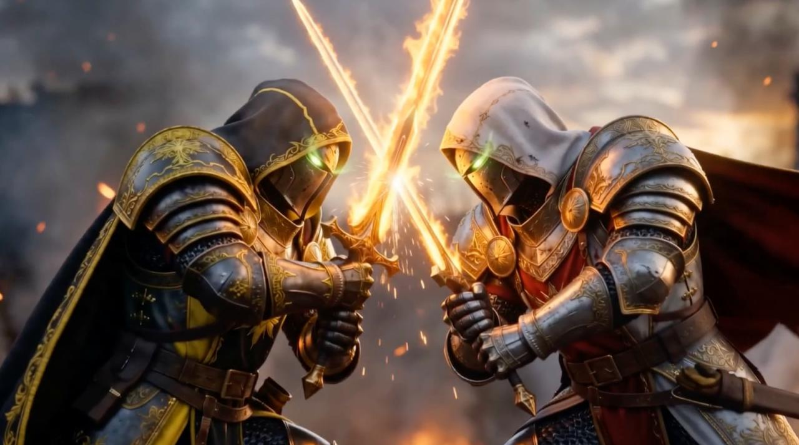

Том I
Авторская вселенная тёмного фэнтези
«Сказки Мертвеца» — авторский проект в жанре тёмного фэнтези, объединяющий книги, иллюстрации, видеоролики и постоянно развивающийся архив вселенной.
Узнать большеРабота над проектом ведётся уже несколько лет. Первый том — «Легенда о короле докаинов» — открывает историю большого мира, который будет постепенно раскрываться в следующих книгах цикла.
Каждый новый том расширяет вселенную, знакомя читателей с новыми героями, государствами, культурами, организациями и событиями, являющимися частью единой истории.
Структура серии
Первый том открывает историю мира. Каждый следующий том расширяет единую вселенную.


Вселенная
Этот сайт был создан как единый архив вселенной «Сказок Мертвеца».
Здесь собраны сведения о персонажах, государствах, организациях, оружии, существах и других элементах мира. По мере выхода новых книг архив будет пополняться новыми материалами.
Некоторые страницы могут содержать информацию, раскрывающую сюжет произведений, поэтому пользоваться архивом рекомендуется после прочтения соответствующего тома.

Иллюстрации
Одним из направлений развития проекта является создание авторских иллюстраций.
Персонажи, города, существа, артефакты и ключевые события постепенно получают собственный визуальный облик, позволяя увидеть мир таким, каким он задумывался во время написания книг.
Видео по вселенной
Помимо книг, ведётся работа над кинематографичными видеороликами по вселенной «Сказок Мертвеца».
Наша цель — оживить события, описанные на страницах книг, показать масштабные сражения, легендарных персонажей и самые важные моменты истории этого мира.
Со временем здесь будут публиковаться новые видеоработы, посвящённые различным событиям цикла.
Развитие проекта
«Сказки Мертвеца» продолжают активно развиваться.
Впереди новые книги, новые материалы архива, иллюстрации, видеоролики и множество других проектов, посвящённых этой вселенной.
Мир проекта уже становится настольной стратегией: четыре фракции, исследование карты, армии и борьба за Святилище представлены в игре «Пробуждение Леса».
Спасибо за интерес к миру «Сказок Мертвеца». Добро пожаловать в архив.
Открыть «Пробуждение Леса» Вернуться к Тому I